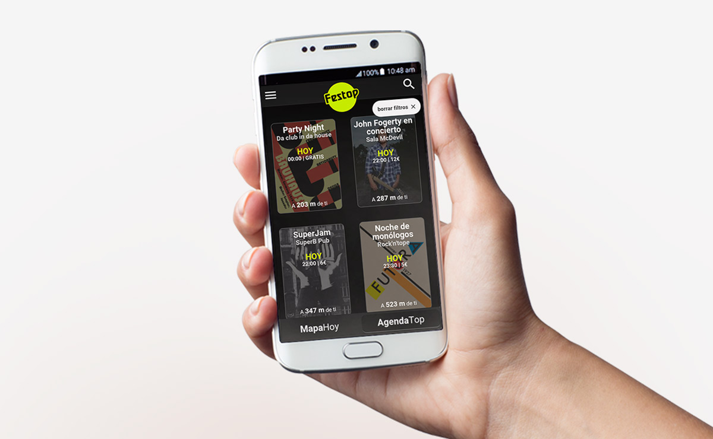
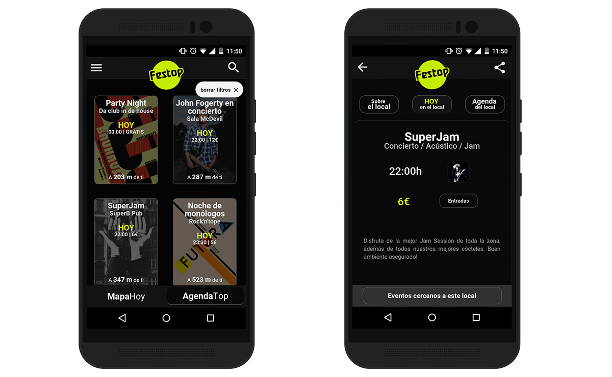
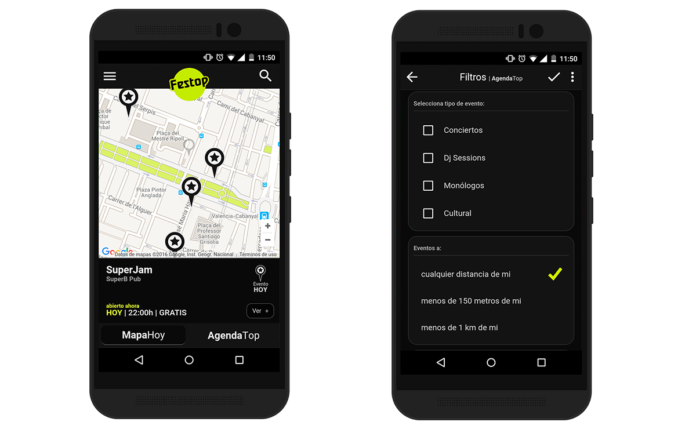

Festop App
Diseño, usabilidad y UX/UI de la App
2016
Diseño integral de la App móvil Festop estrenada en Valencia. Aplicación dedicada a informar al usuario sobre los eventos que están ocurriendo a su alrededor.
Publicada en los medios Las Provincias y Valencia Plaza.